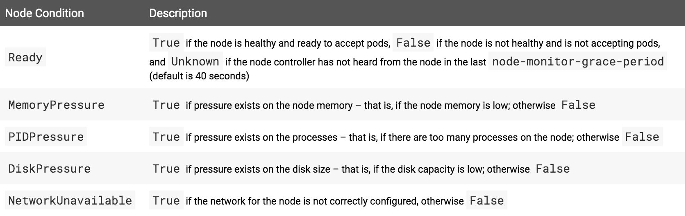

1. 集群架构
1.1. Nodes（节点）
一个节点就是Kubernetes中的一个工作机器，一个节点可能是一台虚拟机，也可能是一台物理机。
每个节点都包含运行pods所需的服务，并由master组件管理。
节点上的服务包括container runtime、kubelet和kube-proxy。
1.1.1. 节点状态
节点的状态包含以下信息：
# 查看节点列表
kubectl get nodes
# 查看节点状态
kubectl describe node <insert-node-name-here>示例：
localhost-2:~ chengjiansheng$ kubectl get nodes
NAME STATUS ROLES AGE VERSION
minikube Ready master 3d2h v1.16.2
localhost-2:~ chengjiansheng$ kubectl describe node minikube
Name: minikube
Roles: master
Labels: beta.kubernetes.io/arch=amd64
beta.kubernetes.io/os=linux
kubernetes.io/arch=amd64
kubernetes.io/hostname=minikube
kubernetes.io/os=linux
node-role.kubernetes.io/master=
Annotations: kubeadm.alpha.kubernetes.io/cri-socket: /var/run/dockershim.sock
node.alpha.kubernetes.io/ttl: 0
volumes.kubernetes.io/controller-managed-attach-detach: true
CreationTimestamp: Sat, 16 Nov 2019 18:58:34 +0800
Taints: <none>
Unschedulable: false
Conditions:
Type Status LastHeartbeatTime LastTransitionTime Reason Message
---- ------ ----------------- ------------------ ------ -------
MemoryPressure False Tue, 19 Nov 2019 21:21:27 +0800 Sat, 16 Nov 2019 18:58:30 +0800 KubeletHasSufficientMemory kubelet has sufficient memory available
DiskPressure False Tue, 19 Nov 2019 21:21:27 +0800 Sat, 16 Nov 2019 18:58:30 +0800 KubeletHasNoDiskPressure kubelet has no disk pressure
PIDPressure False Tue, 19 Nov 2019 21:21:27 +0800 Sat, 16 Nov 2019 18:58:30 +0800 KubeletHasSufficientPID kubelet has sufficient PID available
Ready True Tue, 19 Nov 2019 21:21:27 +0800 Sat, 16 Nov 2019 18:58:30 +0800 KubeletReady kubelet is posting ready status
Addresses:
InternalIP: 192.168.99.111
Hostname: minikube
Capacity:
cpu: 2
ephemeral-storage: 17784772Ki
hugepages-2Mi: 0
memory: 1985612Ki
pods: 110
Allocatable:
cpu: 2
ephemeral-storage: 17784772Ki
hugepages-2Mi: 0
memory: 1985612Ki
pods: 110
System Info:
Machine ID: 0ea5d1f0d9bc427f83fd59da99157a63
System UUID: f2aed72a-64ac-4016-8cb4-eaa2ce6afea5
Boot ID: 8c476881-65ed-419a-aee5-ccc4adaa7527
Kernel Version: 4.19.76
OS Image: Buildroot 2019.02.6
Operating System: linux
Architecture: amd64
Container Runtime Version: docker://18.9.9
Kubelet Version: v1.16.2
Kube-Proxy Version: v1.16.2
Non-terminated Pods: (12 in total)
Namespace Name CPU Requests CPU Limits Memory Requests Memory Limits AGE
--------- ---- ------------ ---------- --------------- ------------- ---
default hello-minikube-6cf65d8776-7lkkt 0 (0%) 0 (0%) 0 (0%) 0 (0%) 6d14h
kube-system coredns-67c766df46-hhxh8 100m (5%) 0 (0%) 70Mi (3%) 170Mi (8%) 6d17h
kube-system coredns-67c766df46-p2hh9 100m (5%) 0 (0%) 70Mi (3%) 170Mi (8%) 6d17h
kube-system etcd-minikube 0 (0%) 0 (0%) 0 (0%) 0 (0%) 6d17h
kube-system kube-addon-manager-minikube 5m (0%) 0 (0%) 50Mi (2%) 0 (0%) 6d17h
kube-system kube-apiserver-minikube 250m (12%) 0 (0%) 0 (0%) 0 (0%) 6d17h
kube-system kube-controller-manager-minikube 200m (10%) 0 (0%) 0 (0%) 0 (0%) 6d17h
kube-system kube-proxy-8zzlz 0 (0%) 0 (0%) 0 (0%) 0 (0%) 6d17h
kube-system kube-scheduler-minikube 100m (5%) 0 (0%) 0 (0%) 0 (0%) 6d17h
kube-system storage-provisioner 0 (0%) 0 (0%) 0 (0%) 0 (0%) 6d17h
kubernetes-dashboard dashboard-metrics-scraper-76585494d8-2w8md 0 (0%) 0 (0%) 0 (0%) 0 (0%) 6d11h
kubernetes-dashboard kubernetes-dashboard-57f4cb4545-mqxxn 0 (0%) 0 (0%) 0 (0%) 0 (0%) 6d11h
Allocated resources:
(Total limits may be over 100 percent, i.e., overcommitted.)
Resource Requests Limits
-------- -------- ------
cpu 755m (37%) 0 (0%)
memory 190Mi (9%) 340Mi (17%)
ephemeral-storage 0 (0%) 0 (0%)
Events: <none>conditions字段描述所有Running节点的状态。

如果Ready条件的状态在长时间内保持Unknown或为False，并且持续时间超过pod-eviction-timeout所指定的时间的话，那么会向kube-controller-manager传递一个参数，节点控制器将调度节点上的所有pod进行删除。默认的清除超时时间是5分钟。在某些情况下，当节点不可用时，apiserver无法与节点上的kubelet通信。在与apiserver重新建立通信之前，不能将删除无法与kubelet通信pods的决定传达给kubelet。与此同时，计划删除的pods可以继续在分区节点上运行。
在1.5及更高版本中，节点控制器不会强制删除pod，直到确认它们已停止在集群中运行。你可以看到在一个不可到达的节点上运行的pod一直处于Terminating或Unknown状态。在Kubernetes无法从底层基础设施推断出某个节点是否永久离开了集群的情况下，集群管理员可能需要手工删除节点对象。从Kubernetes中删除节点对象将导致在该节点上运行的所有Pod对象从apiserver中删除，并释放它们的名称。
Capacity 和 Allocatable 字段，描述节点上可用的资源：CPU、内存和可以在节点上调度的最大pods数。
Capacity块中的字段表示节点拥有的资源总量。
Allocatable块表示一个节点上可供普通Pods使用的资源数量。
1.1.1. 节点管理
与pods和services不同，node不是由Kubernetes创建的：它是由诸如谷歌计算引擎之类的云提供商在外部创建的，或者它存在于一组物理或虚拟机中。因此，当Kubernetes创建一个节点时，它创建一个表示该节点的对象。创建之后，Kubernetes检查节点是否有效。
Kubernetes在内部创建一个节点对象来表示，并通过基于metada.name字段的健康检查来验证节点。如果节点是有效的，也就是说，如果所有必需的服务都在运行，那么它就有资格运行pod。否则，对于任何集群活动都将忽略它，直到它变得有效为止。
目前，有三个组件与Kubernetes节点接口交互：node controller、kubelet和kubectl。
Node Controller
节点控制器是管理节点各个方面的Kubernetes master组件。
第一个是在节点注册时为其分配CIDR块（如果打开了CIDR分配）。
第二个是使节点控制器的内部节点列表与云提供商的可用机器列表保持最新。在云环境中运行时，每当某个节点不健康时，节点控制器就会询问云提供商该节点的VM是否仍然可用。否则，节点控制器将从节点列表中删除节点。
第三是监控节点的健康状况。节点控制器每隔--node-monitor-period秒检查每个节点的状态。
1.2. Master-Node Communication（主节点通信）
1.2.1. Cluster to Master
从集群到主服务器的所有通信路径都终止于apiserver（其他的主组件都不是为了公开远程服务而设计的）。在典型的部署中，apiserver被配置为侦听安全HTTPS端口(443)上的远程连接，并且启用了一种或多种形式的客户端身份验证。
希望连接到apiserver的pod可以通过利用服务帐户来实现安全连接，以便Kubernetes在pod实例化时自动将公共根证书和有效的承载令牌注入到pod中。kubernetes服务(在所有名称空间中)配置了一个虚拟IP地址，该地址(通过kube-proxy)重定向到apiserver上的HTTPS端点。
因此，默认情况下，从集群（节点和在节点上运行的pod）到主服务器的连接的默认操作模式是安全的，可以在不可信的和/或公共网络上运行。
1.2.2. Master to Cluster
从master（apiserver）到cluster有两条主要通信路径。第一个是从apiserver到kubelet进程，它在集群中的每个节点上运行。第二种是通过apiserver的代理功能从apiserver到任何节点、pod或服务。
apiserver to kubelet
从apiserver到kubelet的连接用于：
默认情况下，apiserver不验证kubelet的服务证书，这使得连接容易受到中间人攻击，在不可信的和/或公共网络上运行不安全。为了校验此连接，请使用--kubelet-certificate-authority标志为apiserver提供一个根证书包，用于验证kubelet的服务证书。
apiserver to nodes, pods, and services
从apiserver到节点、pod或服务的连接默认为纯HTTP连接，因此既不进行身份验证，也不进行加密。他们可以运行在一个安全的HTTPS连接通过加前缀HTTPS，但他们不会验证证书提供的HTTPS端点也提供客户端凭证所以当连接将被加密，它不会提供任何担保的完整性。这些连接目前在不可信和/或公共网络上运行是不安全的。
1.3. Controllers
在Kubernetes中，控制器是监视集群状态的控制回路，然后根据需要进行或请求更改。每个控制器都试图将当前集群状态移动到更接近期望的状态。
2. Containers（容器）
2.1. Images（镜像）
为了在Kubernetes pod中引用镜像，你必须首先创建Docker镜像，并推送至镜像仓库。容器的image属性支持与docker命令相同的语法 。
2.1.1. 更新镜像
默认的拉取策略是IfNotPresent，它会导致Kubelet跳过拉取一个已经存在的镜像。
如果你希望总是强制拉取，可以采用以下任意一种方式：
2.1.2. 使用私有仓库
https://cr.console.aliyun.com/cn-hangzhou/new
3. Workloads
3.1. Pods
Pod是Kubernetes应用程序的基本执行单元，创建或部署的Kubernetes对象模型中最小、最简单的单元。Pod代表在集群上运行的进程。
一个Pod封装了一个应用程序的容器（在某些情况下是多个容器）、存储资源、一个唯一的网络IP和控制容器如何运行的选项。
一个Pod代表一个部署单元：Kubernetes中的应用程序的一个单个实例，它可能由单个容器或少量紧密耦合且共享资源的容器组成。
Docker是Kubernetes Pod中最常用的容器运行时，但是Pods也支持其他容器运行时。
Pods在Kubernetes集群中主要有两种使用方式：
Each Pod is meant to run a single instance of a given application. If you want to scale your application horizontally (e.g., run multiple instances), you should use multiple Pods, one for each instance. In Kubernetes, this is generally referred to as replication. Replicated Pods are usually created and managed as a group by an abstraction called a Controller.
每个Pod代表运行一个给定应用的一个单个实例。如果你想要水平扩展你的应用（例如，运行多个实例），你应该用多个Pods，每个实例一个Pod。在Kubernetes中，通常称之为副本。副本Pods通常作为一个组被一个控制器创建和管理。
Pods如何管理多个容器
Pods被设计成支持多个协作流程（作为容器），形成一个内聚的服务单元。Pod中的容器会自动在集群中的同一物理或虚拟机上同时定位和调度。容器可以共享资源和依赖项，彼此通信，以及协调何时以及如何终止它们。
请注意，在单个Pod中分组多个共存和共同管理的容器是一个相对高级的用例。你应该仅在容器紧密耦合的特定实例中使用此模式。例如，可能有一个容器充当共享卷中的文件的web服务器，还有一个单独的“sidecar”容器，用于从远程源更新这些文件，如下图所示：
有些pod有init容器和app容器。Init容器在应用程序容器启动之前运行并完成。
Pods为组成它的容器们提供两种共享资源：网络和存储。
网络
每个Pod被分配一个唯一的IP地址。Pod中的每个容器共享网络命名空间，包括IP地址和网络端口。Pod中的容器可以使用localhost彼此通信。当Pod中的容器与Pod外的实体通信时，它们必须协调如何使用共享的网络资源（如端口）。
存储
一个Pod可以指定一组共享存储卷。Pod中的所有容器都可以访问共享卷，从而允许这些容器共享数据。卷还允许在Pod中保存持久数据，以防需要重新启动其中一个容器。
3.1.1. Pods and Controllers
通常，很少直接在kubernetes中创建单独的Pods，这是因为Pod被设计成相对短暂的一次性实体。当Pod被创建时（直接创建，或间接由控制器创建)），它将被调度到在集群中的节点上运行。Pod将一直在该节点上，直到进程终止、删除Pod对象、由于缺乏资源而驱逐Pod或节点失败。
Pods无法自愈（自动恢复）。如果将Pod调度到失败的节点，或者调度操作本身失败，则Pod将被删除。同样，如果由于缺乏资源或节点维护，Pod也将被删除。Kubernetes使用一个更高层次的抽象，称为控制器，它处理管理相对可丢弃的Pod实例的工作。因此，虽然可以直接操作Pod，但在Kubernetes中使用控制器来管理Pod要常见得多。
一个Controller可以为你创建和管理多个Pods，并处理副本和rollout，以及集群范围内提供自修复功能。例如，如果一个节点失败，控制器可能通过在不同的节点上调度相同的副本来自动替换Pod。
控制器使用Pod模板来制作实际的Pod。下面是一个例子：
apiVersion: v1
kind: Pod
metadata:
name: myapp-pod
labels:
app: myapp
spec:
containers:
- name: myapp-container
image: busybox
command: ['sh', '-c', 'echo Hello Kubernetes! && sleep 3600']
3.2. Pod是什么
一个Pod（就像一个豌豆荚）是一个组，这个组中包含一个或多个容器（比如，Docker容器），具有共享存储/网络，以及如何运行容器的规范。Pod的内容总是同时定位和同时调度，并在共享上下文中运行。Pod为特定于应用程序的“逻辑主机”建立模型，它包含一个或多个相对紧密耦合的应用程序容器，在容器之前的世界中，在相同的物理或虚拟机上执行意味着在相同的逻辑主机上执行。
Docker是最常见的容器运行时。
Pod中的容器共享一个IP地址和端口空间，并且可以通过localhost相互查找。它们还可以使用SystemV信号量或POSIX共享内存等标准进程间通信进行通信。不同Pods中的容器有不同的IP地址，没有特殊配置的情况下是不能通过IPC进行通信的。这些容器通常通过Pod IP地址彼此通信。
Pod中的应用程序也可以访问共享volumes，这些共享volumes被定义为Pod的一部分，可以安装到每个应用程序的文件系统中。
在Docker构造方面，Pod被建模为一组Docker容器，它们具有共享的名称空间和共享的文件系统volumes。
与单个应用程序容器一样，Pods被认为是相对短暂的（而不是持久的）实体。正如在pod生命周期中所讨论的，创建pod，分配惟一ID (UID)，并将其调度到节点，直到终止（根据重启策略）或删除。如果一个节点死亡，那么在超时之后，该节点的Pods将被删除。给定的Pod（由UID定义）不会“重新调度”到一个新节点；相反，它可以被一个相同的Pod替换，如果需要，甚至可以使用相同的名称，但是要使用一个新的UID。
如果Pod被删除，那么与之相关联的资源都会被销毁，并在必要的时候重新创建。
3.2.1. Pods的动机
Pods是一个模型，这种模型就是将多个协作流程内聚成一个服务。它们通过提供比其组成应用程序集更高级别的抽象来简化应用程序部署和管理。Pods可以作为部署、水平扩展和副本的单元。在Pods中，托管（协同调度）、共享命运（例如终止）、协调副本、资源共享和依赖项管理都是自动处理的。
Pods使得数据共享和成员之间的通信成为可能。
在一个Pod中的所有应用程序都使用相同的网络名称空间（即，相同的IP和端口），因此应用之间可以“找到”彼此并使用localhost进行通信。因此，Pod中的应用程序必须协调它们对端口的使用。每个Pod在平面共享网络空间中都有一个IP地址，可以通过网络与其它物理计算机和Pod进行完全通信。
除了定义在Pod中运行的应用程序容器外，Pod还指定一组共享存储volumes。Volumes使数据能够在容器重启后继续存在，并在Pod内的应用程序之间共享。
为什么不在一个（Docke）容器中运行多个应用程序呢？
1、透明度。使Pod中的容器对基础设施可见使基础设施能够向这些容器提供服务，例如流程管理和资源监控。这为用户提供了许多便利。
2、解耦软件依赖关系。可以独立地对各个容器进行版本控制、重新构建和重新部署。
3、易用性。用户不需要运行自己的进程管理器，不需要担心信号和输出代码传播等问题
4、效率。因为基础设施承担了更多的责任，容器可以更轻量级。
3.2.2. Pods的持久性
Pods不打算被视为持久的实体。它们无法在调度失败、节点失败或其他驱逐（如由于缺乏资源或在节点维护的情况下）中幸存下来。
一般来说，用户不需要直接创建Pods。他们几乎总是应该使用控制器，即使对于单例也是如此，例如部署。控制器提供集群范围的自修复，以及副本和滚动管理。
3.2.3. Pods终止
因为Pods表示集群中节点上正在运行的进程，所以允许这些进程在不再需要它们时优雅地终止是很重要的（PS：优雅指的是与使用终止信号被暴力杀死而没有机会清理的情况相比）。用户应该能够请求删除并知道进程何时终止，但也能够确保删除最终完成。当用户请求删除一个Pod时，系统记录允许强制杀死Pod之前的宽限期（默认30秒），并向每个容器中的主进程发送TERM信号。宽限期一过，KILL信号就发送给这些进程，然后从API服务器删除Pod。如果在等待进程终止时重新启动了Kubelet或容器管理器，则将在完整的宽限期内重试终止。
3.3. Controllers
3.3.1. ReplicaSet
ReplicaSet（副本集）的目的是维护一组稳定的副本Pods，以保证在任何给定时间都有可用的Pods。因此，它通常用于保证指定数量的相同Pods的可用性。
一个ReplicaSet是由一些字段定义的，包括一个选择器，它指定如何识别它可以获得的pod，一个副本的数量指示它应该维护多少个pod，一个pod模板指定它应该创建的新pod的数据，以满足replicas的数量标准。然后，一个复制集通过创建和删除Pods来实现它的目的，以达到所需的数量。当一个复制集需要创建新的Pod时，它使用它的Pod模板。
示例：
apiVersion: apps/v1
kind: ReplicaSet
metadata:
name: frontend
labels:
app: guestbook
tier: frontend
spec:
# modify replicas according to your case
replicas: 3
selector:
matchLabels:
tier: frontend
template:
metadata:
labels:
tier: frontend
spec:
containers:
- name: php-redis
image: gcr.io/google_samples/gb-frontend:v3
保存这个manifest文件为frontend.yaml，并提交到Kubernetes集群，这样就创建了一个副本集定义。
# 提交副本集定义
kubectl apply -f frontend.yaml
# 获取当前副本集
kubectl get rs
# 查看副本集状态
kubectl describe rs/frontend3.3.2. ReplicationController
ReplicationController确保在任何时候都运行指定数量的pod副本。换句话说，一个ReplicationController确保一个pod或一组同类的pod总是处于可用状态。
如果有太多的pods，ReplicationController会终止额外的pods。如果数量太少，ReplicationController就会启动更多的pods。与手动创建的pods不同，ReplicationController维护的pods在失败、删除或终止时将自动替换。例如，在内核升级等破坏性维护之后，将在节点上重新创建pods。因此，即使应用程序只需要一个pod，也应该使用ReplicationController。ReplicationController类似于进程管理器，但是它不是管理单个节点上的单个进程，而是管理跨多个节点的多个pod。
下面这个示例ReplicationController配置运行三个nginx web服务器副本：
apiVersion: v1
kind: ReplicationController
metadata:
name: nginx
spec:
replicas: 3
selector:
app: nginx
template:
metadata:
name: nginx
labels:
app: nginx
spec:
containers:
- name: nginx
image: nginx
ports:
- containerPort: 80另存为replication.yaml
# 提交副本定义
kubectl apply -f replication.yaml
# 查看副本状态
kubectl describe replicationcontrollers/nginx3.3.3. Deployments
一个Deployment（部署）为 Pods 和 ReplicaSets 提供声明式更新。
你在部署中描述一个期望的状态，而Deployment Controller以受控的速率将实际状态更改为期望状态。你可以定义部署来创建新的副本集，或者删除现有的部署。
例如：
apiVersion: apps/v1
kind: Deployment
metadata:
name: nginx-deployment
labels:
app: nginx
spec:
replicas: 3
selector:
matchLabels:
app: nginx
template:
metadata:
labels:
app: nginx
spec:
containers:
- name: nginx
image: nginx:1.7.9
ports:
- containerPort: 80
3.3.4. DaemonSet
DaemonSet确保所有（或部分）节点都运行一个Pod的副本。随着节点被添加到集群中，pod也被添加到该节点上。当节点从集群中移除时，这些pods将被垃圾收集。删除DaemonSet将清理它创建的pods。
4. Services
一种将运行在一组pod上的应用程序公开为网络服务的抽象方法。
使用Kubernetes，你不需要修改应用程序来使用不熟悉的服务发现机制。Kubernetes为Pods提供它们自己的IP地址和单个DNS名称，并且可以在它们之间实现负载均衡。
每个Pod都有自己的IP地址，但是在部署中，某个时刻运行的Pod集可能与稍后运行该应用程序的Pod集稍微有些不同。
在Kubernetes中，服务是一种抽象，它定义了一组逻辑Pods和访问它们的策略（有时这种模式被称为微服务）。服务最终部署到哪个pods通常由选择器决定
如果你在应用程序中使用Kubernetes API进行服务发现，则可以查询API服务器的端点，并且在服务更新的时候这些端点也会得到更新。
apiVersion: v1
kind: Service
metadata:
name: my-service
spec:
selector:
app: MyApp
ports:
- protocol: TCP
port: 80
targetPort: 9376
4.1. 服务发现
Kubernetes支持两种主要的模式：服务环境变量和DNS
当在节点上运行Pod时，kubelet为每个激活的服务添加一组环境变量。它既支持Docker links compatible 的变量，也支持更简单的{SVCNAME}_SERVICE_HOST和{SVCNAME}_SERVICE_PORT变量，其中服务名采用大写形式，破折号转换为下划线。
例如，有一个服务名字叫“redis-master”，IP和端口分别是10.0.0.11和6379，那么将会生成以下环境变量：
REDIS_MASTER_SERVICE_HOST=10.0.0.11
REDIS_MASTER_SERVICE_PORT=6379
REDIS_MASTER_PORT=tcp://10.0.0.11:6379
REDIS_MASTER_PORT_6379_TCP=tcp://10.0.0.11:6379
REDIS_MASTER_PORT_6379_TCP_PROTO=tcp
REDIS_MASTER_PORT_6379_TCP_PORT=6379
REDIS_MASTER_PORT_6379_TCP_ADDR=10.0.0.11
4.2. 发布服务
Kubernetes ServiceTypes 允许你指定想要的服务类型。默认是ClusterIP。
Type可选值有：
4.3. Volumes
容器中的磁盘上的文件是短暂的，这给在容器中运行的重要应用程序带来了一些问题。首先，当容器崩溃时，kubelet将重新启动它，但是文件将丢失—容器将以一个干净的状态开始。其次，在一个Pod中一起运行容器时，常常需要在这些容器之间共享文件。Kubernetes Volume抽象解决了这两个问题。
Docker也有一个volumes（卷）的概念，在Docker中，卷就是磁盘上或另一个容器中的目录，其生存期没有管理。
Kubernetes volume有一个明确的生命周期，它与包裹它的Pod一样。因此，卷的生命周期比在Pod中运行的任何容器都长，并且跨容器重新启动时保留数据。当然，当一个pod被删除的时候，volum也会被删除。更重要的是，Kubernetes支持多种类型的卷，一个Pod可以同时使用任意数量的卷。